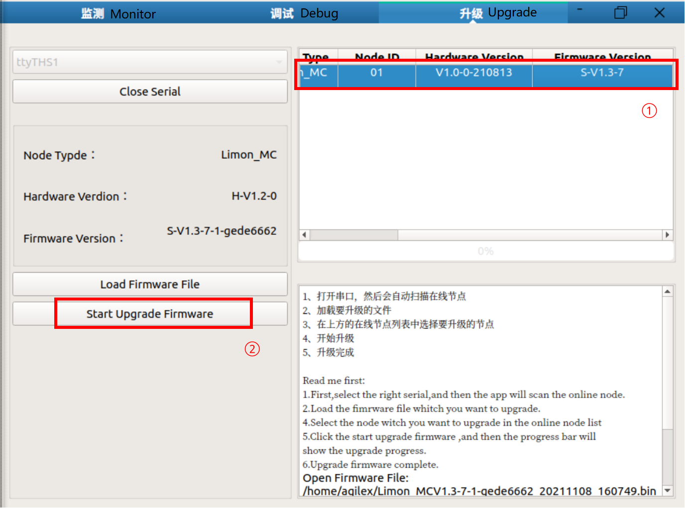

Flash LIMO Controller Firmware
- On the LIMO’s Jetson Nano, download the latest firmware image from the
limo_software/limo_firmware updatedirectory of AgileX’s limo-doc GitHub repository. It will be named something likeLimonTestVX.X_Nano.
Power off the robot.
When the robot is powered off, press the power button twice to enter the firmware upgrade mode. When the power button flashes, it has successfully entered the firmware upgrade mode. After a few seconds, the Jetson Nano will start normally.
Make the LimonTest_Nano software executable. Open a terminal and enter the command:
$ chmod +x LimoTestV1.1_Nano # ^^^^^^^^^^^^^^^^^ replace this with the actual name of the firmwareLaunch the software and start to upgrade the firmware. Enter the command:
$ ./LimoTestV1.1_Nano
After the software is successfully opened, click the upgrade button, and the displayed screen is as shown in the figure below:
Select the corresponding serial port. This will typically be
ttyTHS1. Click Open Serial to open the serial port, and then click Load Firmware File to select the firmware to be upgraded.
Select the firmware information in the firmware list, and then click the Start Upgrade button to start the firmware upgrade.
After the upgrade is successful, click the Close Serial button to close the serial port.